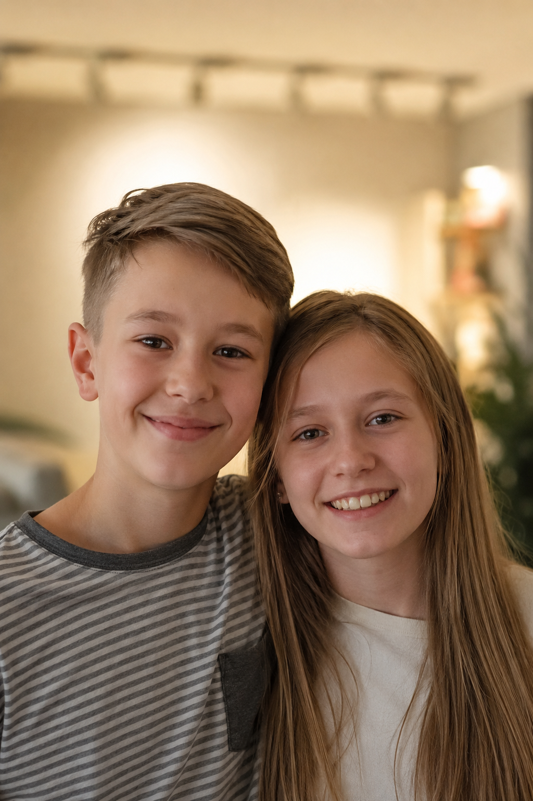

60 %
школьников получают в сентябре оценки ниже, чем были в мае — без летней нагрузки на чтение и концентрацию
С помощью уникальной методологии скорочтения онлайн-школы Matrius.

Это цифры, подтверждённые исследованиями. Каждое лето мозг ребёнка незаметно делает шаг назад — а в сентябре это превращается в стресс для всей семьи.
Ваш ребёнок не просто сохранит школьные навыки — он придёт в сентябрь с более подготовленным, лучшей концентрацией и средним приростом +0,7 балла к оценкам. Программа на лето построена так, чтобы ребёнок учился в комфортном темпе и у него оставалось время на прогулки с друзьями.
Когда ребёнок читает быстро и с пониманием, у него остаются силы и время на всё остальное — от математики до творчества. Один навык, который улучшает всю успеваемость и помогает спокойнее встретить начало учебного года.
Домашка делается в 2 раза быстрее, остаётся время на отдых.
Ребёнок дольше удерживает внимание и лучше запоминает прочитанное.
Богаче словарный запас, проще формулировать мысли — в том числе на устных ответах у доски.
Оценки растут, учителя хвалят — ребёнок чувствует себя успешным и охотно берётся за новое.
Большие тексты заданий перестают пугать — ребёнок успевает прочитать, понять и ответить.
Когда ребёнок быстро схватывает материал сам, дополнительные занятия нужны реже.
Мы тренируем не просто скорость. Мы также развиваем мышление, память и речь — через игру, в которую ребёнок включается сам. Программа на лето построена так, чтобы ребёнок учился в комфортном темпе и у него оставалось время на прогулки с друзьями.
Упражнения построены на работе обоих полушарий — скорость чтения растёт вместе с пониманием, а не вместо него.
Программа адаптируется к ребёнку: возраст, скорость, интересы.
Ребёнок не просто читает — он обсуждает прочитанное с педагогом. Так формируется понимание.
Никаких «двоек за ошибки». Ребёнок не боится пробовать — и потому быстрее учится.
Педагог встречается с ребёнком онлайн, узнаёт его интересы и любимые книги — и строит урок на основе интересов.
Замер стартовой скорости чтения, понимания текста и концентрации. Родитель видит точку, с которой стартуем.
Ребёнок пробует методику Matrius прямо на уроке и видит первый результат уже через 30 минут.
Педагог объясняет, что и как делать летом, чтобы к сентябрю выйти с +0,7 балла к оценкам.
Регулярные тренировки по 10 минут в день дают результат уже через месяц — без скучных длинных занятий.
Ребёнок научится удерживать внимание 30+ минут на одной задаче — даже когда рядом телефон.
Привычка читать каждый день — главный навык, который останется с ребёнком на всю учёбу и жизнь.
Чтобы лето прошло с пользой, а сентябрь без стресса для вас и вашего ребёнка.